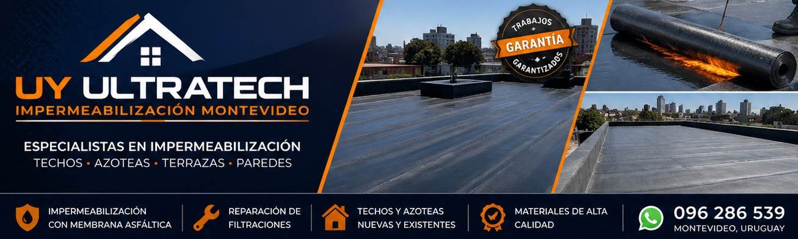
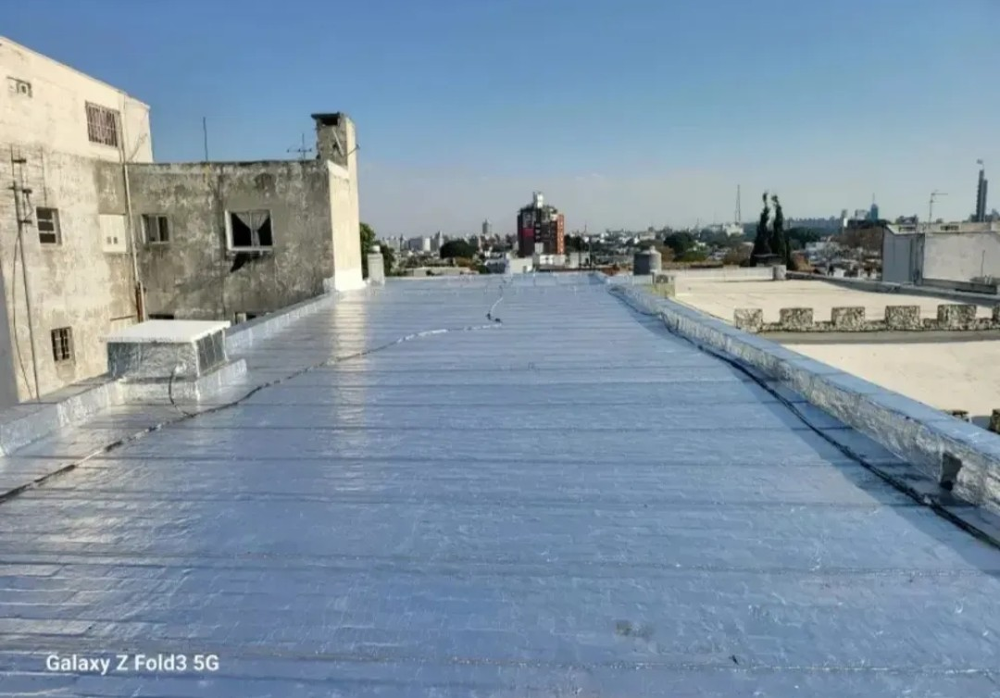
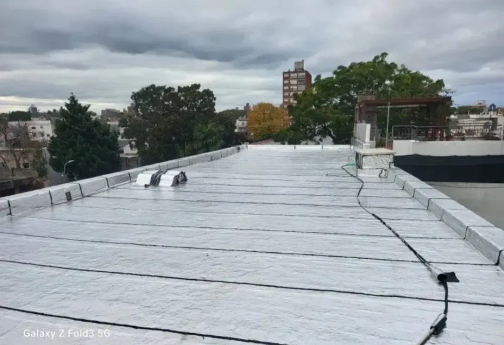
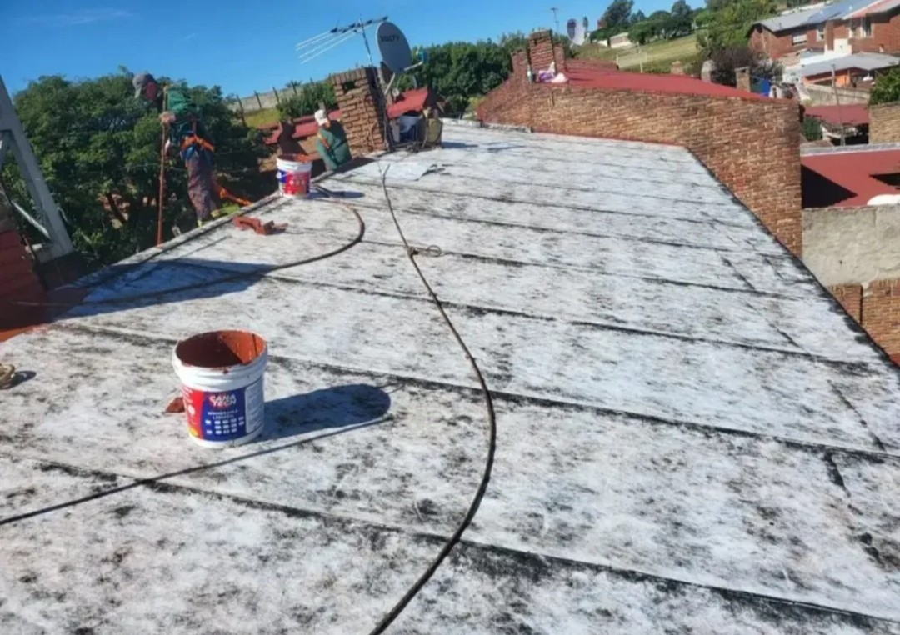
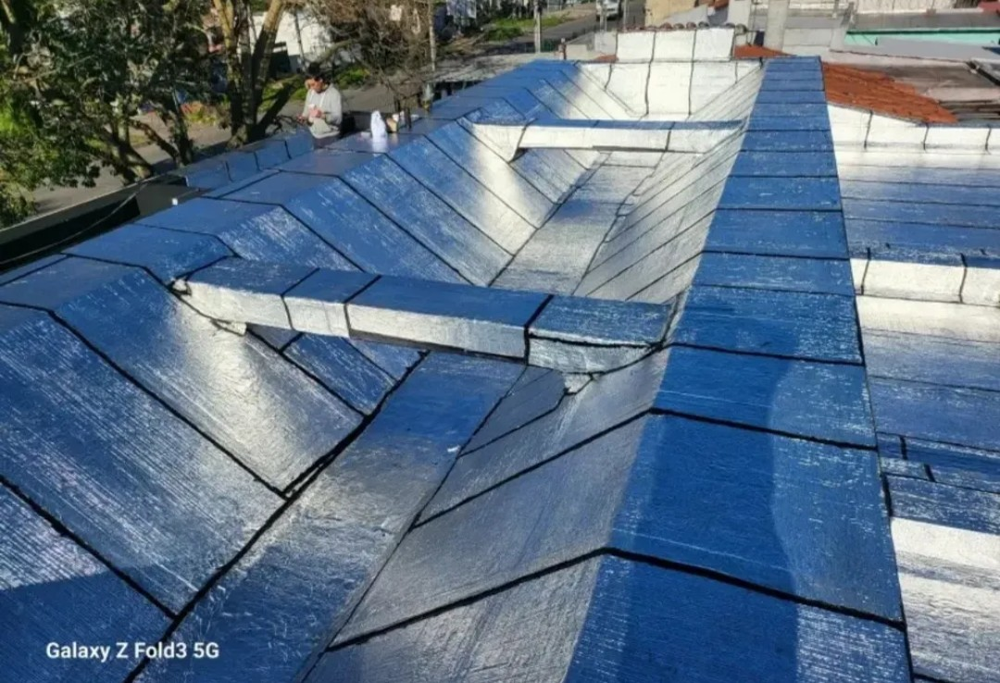
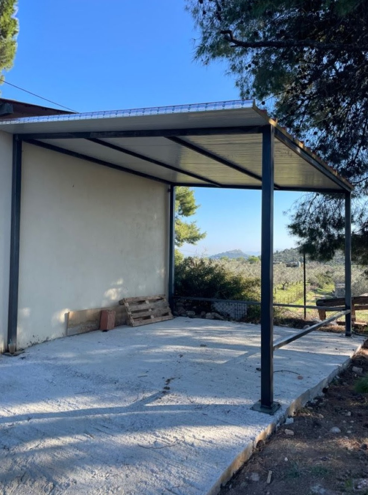
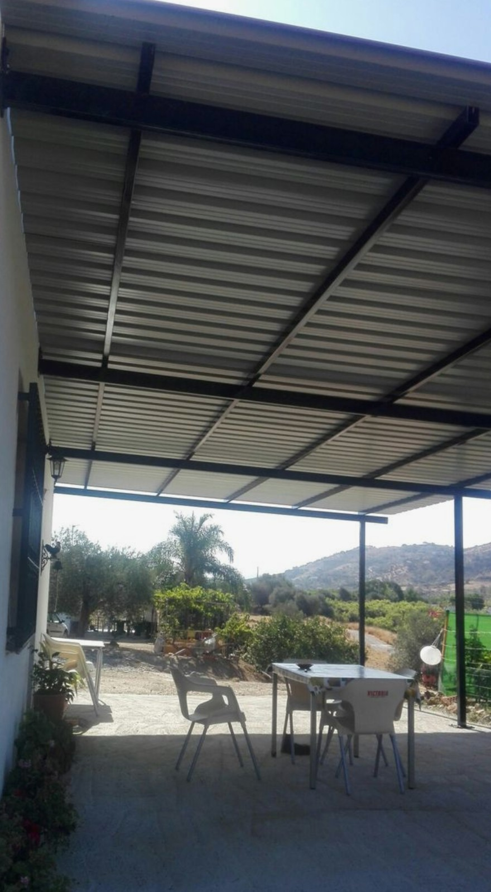
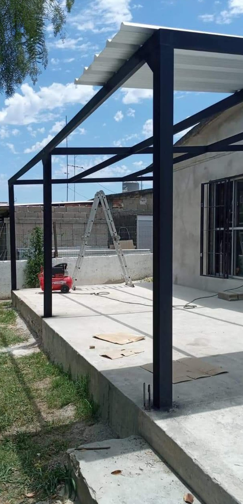
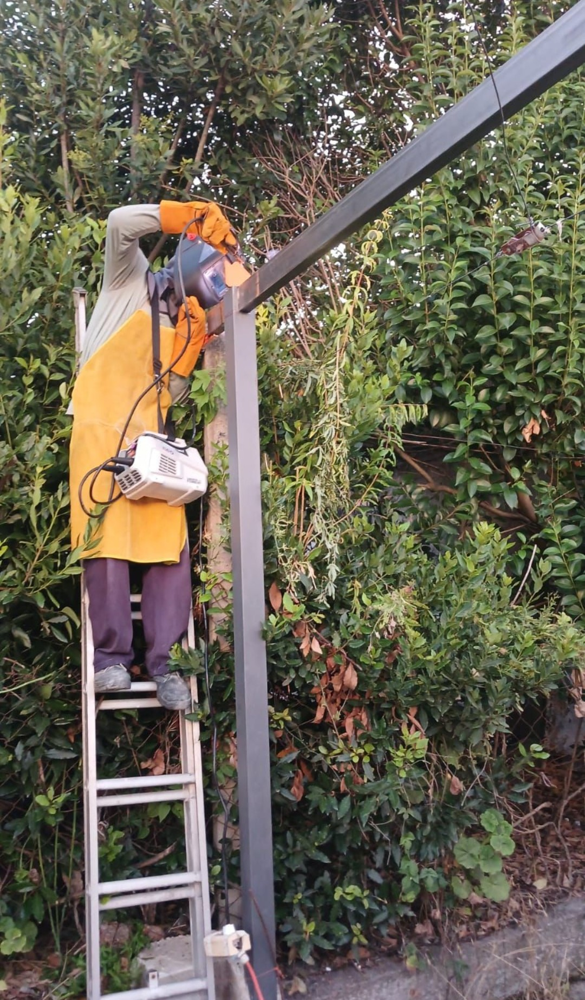

Impermeabilización de techos
Trabajo profesional con garantía real

En Ultratech Uy ofrecemos servicios profesionales de impermeabilización de techos en Montevideo. Solucionamos filtraciones, humedades y problemas de aislamiento con materiales de alta calidad.
Más de 15 años de experiencia en reparación de techos, membranas y protección contra humedad.
Empresa especializada en impermeabilización de techos con más de 15 años de experiencia en soluciones contra filtraciones y humedad.
✔ Impermeabilización de techos
✔ Reparación de filtraciones
✔ Sellado de azoteas
✔ Mantenimiento preventivo
✔ +15 años de experiencia
✔ +150 trabajos realizados
✔ Clientes satisfechos en Montevideo







